07.30.2010 07:24
ROV competition
Earlier this week, there was an ROV
competition for students in the Chase Ocean Engineering test tank.
There were hula hoops setup by Navy divers as obstacles.
Colleen also took some pictures of the Tech Camp 2010: Tech Camp 2010
Colleen also took some pictures of the Tech Camp 2010: Tech Camp 2010
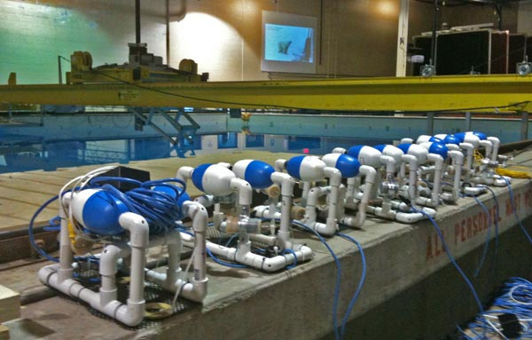
07.30.2010 07:23
CCOM acoustics short course
Several people around CCOM have been
working on an acoustics short course. Here is Val demonstrating one
of the excercises of the course. Too bad that the course will be on
the road or I would definitely sit in on it.
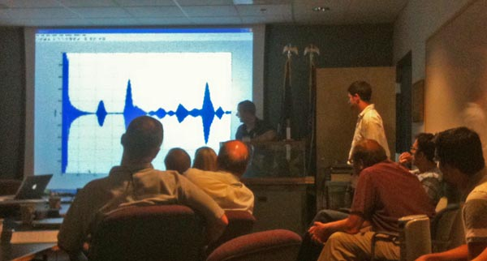
07.29.2010 14:15
New CCOM VisLab web site
Colin and Colleen have just released
the redone Vislab web site. I haven't had a chance to contribute
enough to the new design, but I hope to soon.
www.ccom.unh.edu/vislab
www.ccom.unh.edu/vislab
07.29.2010 11:51
the dictionary in iBooks rocks
I really love having the dictionary
while reading a book on the iPad. Returning to the past, I've never
read Dracula before. There are some older English terms that I
don't know. A perfect example is the word caleche. Being a
geologist, I immediately thought of caliche,
which is calcium carbonate. Now I'm not likely to use the word
caleche in my life, but now I know 
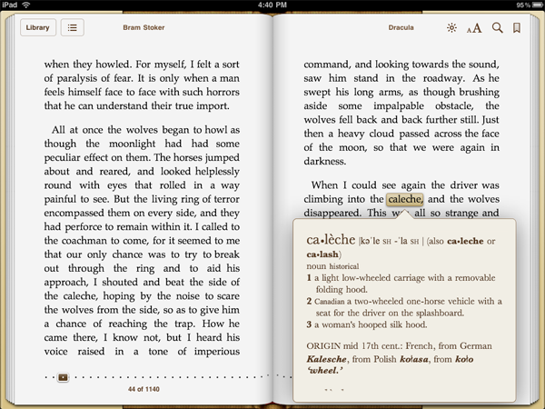
07.28.2010 06:19
Participate in a NASA mission right now!
Just got this from Terry at NASA
Ames. The team is hoping to spread the word about participation, so
head over there and vote.
Vote Now: Help NASA Decide Where To Explore!
In September 2010, NASA will be simulating a lunar mission in northern Arizona. Astronauts will drive the "Space Exploration Vehicle" (http://www.nasa.gov/exploration/home/SEV.html) to explore and do geology field work. NASA has taken two GigaPan (www.gigapan.org) panoramic images of the test site. You can look at these images and vote to help NASA decide which location to visit. The location that receives the most votes will be incorporated into the mission plan and astronauts will go there in the SEV to perform field geology and collect rock samples.
To cast your vote, please visit:
http://desertrats2010.arc.nasa.gov
Voting ends on Sunday, August 8, 2010.
NASA press release: http://www.nasa.gov/home/hqnews/2010/jul/HQ_10-180_Desert_RATS.html
Vote Now: Help NASA Decide Where To Explore!
In September 2010, NASA will be simulating a lunar mission in northern Arizona. Astronauts will drive the "Space Exploration Vehicle" (http://www.nasa.gov/exploration/home/SEV.html) to explore and do geology field work. NASA has taken two GigaPan (www.gigapan.org) panoramic images of the test site. You can look at these images and vote to help NASA decide which location to visit. The location that receives the most votes will be incorporated into the mission plan and astronauts will go there in the SEV to perform field geology and collect rock samples.
To cast your vote, please visit:
http://desertrats2010.arc.nasa.gov
Voting ends on Sunday, August 8, 2010.
NASA press release: http://www.nasa.gov/home/hqnews/2010/jul/HQ_10-180_Desert_RATS.html
07.25.2010 07:57
ERMA in the field
I don't get a lot of feedback from
the field about how ERMA is used. Usually, all I get comes in when
something stops working. A recent gCaptain's article,
BP's (not really) Top Secret Oil Spill Command Post, used a
USCG photo in a recent post:
Enhanced Mobile Incident Command Post
So, if you are out in the field with ERMA and see it in use, I would really appreciate you snap a photo and send it my way. Better yet, post it yourself, set your sharing info (e.g. one of the Creative Commons licenses), and send me a link. Thanks!
MOBILE, Ala. - Coast Guard personnel operate communication equipment to disseminate oil spill coordinates to vessels conducting oil skimming operations in the Gulf of Mexico Friday, July 2, 2010. The enhanced mobile incident command post's primary function is to provide sheltered work space, voice and data connectivity as well as command and control capabilities on a mobile platform. Coast Guard photo by Petty Officer 3rd Class Walter Shinn.I noticed the display on the left looks an aweful lot like ERMA. I zoomed in and discovered that it is indeed ERMA. Just not much in the way of interesting layers.
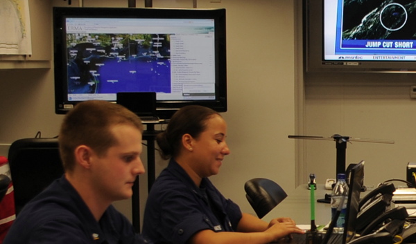
So, if you are out in the field with ERMA and see it in use, I would really appreciate you snap a photo and send it my way. Better yet, post it yourself, set your sharing info (e.g. one of the Creative Commons licenses), and send me a link. Thanks!
07.23.2010 18:46
L3 Desktop AIS ATON
This week I got a new device in the
door that I will be testing and then deploying in the near future
for NOAA and the USCG. This is the desktop version of an AIS ATON
transceiver. This unit does not use milspec connectors for power
and data like the field unit. It's being deployed in doors, so it
should do okay. This will replace the blueforce Class A CNS
transceiver that the USCG requested I use as the 2nd iteration
device. The first iteration was a traditional off the shelf CNS
6000 without blueforce. That caused a situation where it looked
like there was a ship sitting on the Cape Cod visitor center. That
was great for debugging because any AIS software could see if the
station was alive and able to transmit. Ohmex has been kind enough
to lend us a test unit in the mean time. That has been a huge help,
but we got tripped up by the older L3 ATON unit having firmware
that made using BBM messages difficult - it was not producing ABM's
in return. After the update, the unit is able to take BBM messages
and return the ABM.
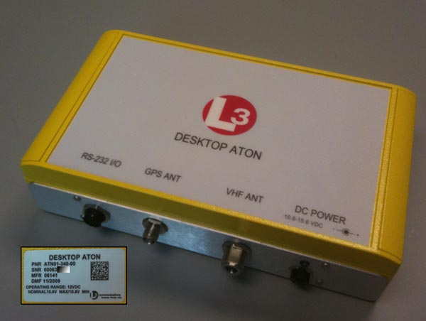
07.23.2010 10:58
Debugging KML that will not work in Maps / iPad GE
Earlier this week, I was unable to
get my KML to load in Maps or the iPad. Mano had me export from
Google Earth the visualization that was working there. He gave me
some questions, which turned out to be some good starting points
for debugging KML issues.
Now, I'm back to trying to figure out what was wrong in mine original that was fixed in the version exported from Google Earth. My first approach was to see if I can do an XML schema validation. Hopefully that will hightlight the trouble that I'm causing.
Lesson: do not put your style information inside of a folder. Earth is okay with it, but Maps and Earth on the iPad become unhappy.
Thanks to Mano for setting me on a more logical approach to attacking this issue.
How are you loading the KML? None of our mobile versions officially supports loading KML at this time.I was loading it into My Maps when logged into maps.google.com. He then followed up with:
Does it work directly in My Maps?Um... no, it was broken there to. I had incorrectly assumed that I had just used something in my KML that was not supported in Maps. I looked at another visualization and that worked great in maps with icons and line styles.
Does re-exporting it still work in Earth? That is, when you load the NL in Earth, does it look right, or is it still broken?Uh... that works and then I load that export file from Earth in to Maps, it worked. Then I pulled it up on the iPad from under "My Maps," it looked fantastic. I showed the results to a number of NOAA folks visiting CCOM from the Office of Coast Survey (and a couple other groups) and they all thought it was pretty cool.
Now, I'm back to trying to figure out what was wrong in mine original that was fixed in the version exported from Google Earth. My first approach was to see if I can do an XML schema validation. Hopefully that will hightlight the trouble that I'm causing.
wget http://schemas.opengis.net/kml/2.2.0/ogckml22.xsd
wget http://schemas.opengis.net/kml/2.2.0/atom-author-link.xsd
xmllint --noout --schema ogckml22.xsd zone9-10.kml
zone9-10.kml:2: element kml: Schemas validity error :
Element '{http://earth.google.com/kml/2.2}kml':
No matching global declaration available for the validation root.
zone9-10.kml fails to validate
That just means that I need to change my name space definition to
match the namespace of the OGC schema. I change the 2nd line to
this
<kml xmlns="http://www.opengis.net/kml/2.2">I reran the xmllint and found that name is supposed to be before description. And I found a bunch more things that are not validating: (namespace info removed)
xmllint --noout --schema ogckml22.xsd zone9-10.kml
zone9-10.kml:24: element IconStyle: Schemas validity error : Element 'IconStyle': This element is not expected. Expected is ( ListStyle ).
[repeats 4 more times]
zone9-10.kml:237: element description: Schemas validity error : Element 'description':
This element is not expected.
Expected is one of ( AbstractStyleSelectorGroup, Style, StyleMap, Region, Metadata, ExtendedData, AbstractGeometryGroup, MultiGeometry, Point, LineString ).
zone9-10.kml:345: element description: Schemas validity error :
Element 'description': This element is not expected.
Expected is one of ( AbstractStyleSelectorGroup, Style, StyleMap, Region, Metadata, ExtendedData, AbstractGeometryGroup, MultiGeometry, Point, LineString ).
zone9-10.kml fails to validate
I backed up at this point and did a diff between the original and
the Google Earth export. I had my style inside of a folder and the
export didn't.Lesson: do not put your style information inside of a folder. Earth is okay with it, but Maps and Earth on the iPad become unhappy.
Thanks to Mano for setting me on a more logical approach to attacking this issue.
07.20.2010 21:28
Google Earth on the iPad - Part II
With some help from Mano Marks, I was
able to get a version of the right whale notices working in Google
Maps and in Google Earth on the iPad. Mano had me do an export from
the desktop version of Google Earth and that works just fine
through the whole chain. Hopefully, I'll get a chance soon to dig
in and find what I did wrong. Only thing really missing from the
iPad for this demo is the BalloonStyle so that I can remove the
driving directions, give credit to all who work on the right whale
observing system, and link to ListenForWhales.org.
boston-whale-zones-re-export.kml
in google maps
View Larger Map
Here are images of the KML on the iPad:
Next up after I debug my KML comes seeing if the refresh of the network link works.
boston-whale-zones-re-export.kml
in google maps
View Larger Map
Here are images of the KML on the iPad:
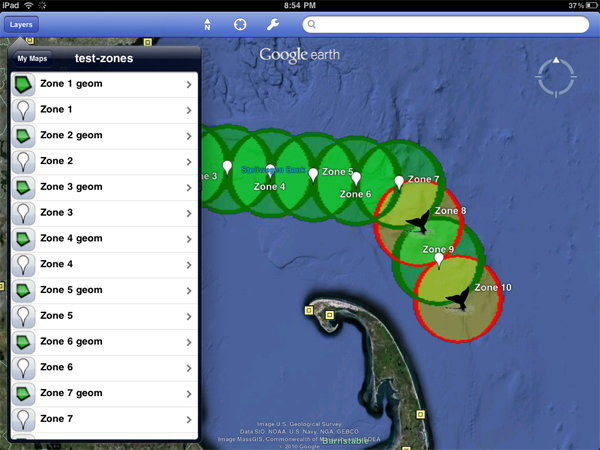
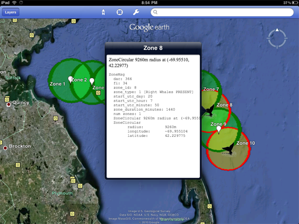
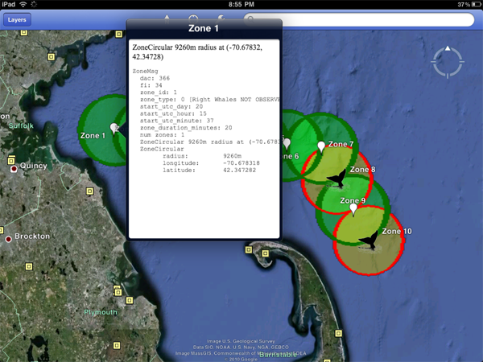
Next up after I debug my KML comes seeing if the refresh of the network link works.
07.20.2010 16:08
Google Earth on the iPad
Google Earth on the iPad is pretty
exciting. The iPhone display was too small to really make good use
of Google Earth and the iPhone is pretty under powered for graphics
and processing. It looks like the port to the iPad is pretty much
the iPad, but with full screen enabled. It will be exciting to see
where Google takes Earth on the iPad. I would really like to be
able to save kml/kmz content locally, added KML files by typing in
URLs, get a few of the kinks worked out. Here is my first bit of
exploration on a 3G iPad lent to me by IFAW for developement of
Whale notice applications. Some of what you see here not working
might be due to mistakes in my KML feeds or it could be the app
issues. If anyone knows, please email me!
I've been cleaning up my KML display of Cornell's acoustic right whale detection buoys so that it has the actual geometry, somewhat reasonable colors, and icons that make more sense. It's still pretty uggly, but much improved. Here is what it looks like on my desktop using this URL, which will be updating every ten minutes when I enable the cron job:
boston-whale-zones-updating.kml
To get the KML to the iPad, I have to publish the feed in my Google Maps accounts. However, Google Maps looses all of the nice coloring and the icons.
UPDATE 2 hours later: Mano Marks has been helping me to debug what is going on. Google Maps now looks much better. I hope to follow up in the ipad tomorrow.
I also had my USCGC Healy visualizations in my Google Maps. This was how I gave permission for Google to pull my GeoRSS feeds into the Google Oceans layer. The science data turned out pretty good. The HTML table of data came out looking better than it does on the desktop.
The aloftcon KML feed of pictures looking out over the bow of the ship shows the icon just fine unlike the whale zones. However, then I click on a placemark the photo never loads.
As BRC pointed out, the iPad has only been out for a couple of months, so developers haven't had much time to really dig into what is possible on the iPad. I can't wait to see where the new breed of iOS and Android tablets go.
I've been cleaning up my KML display of Cornell's acoustic right whale detection buoys so that it has the actual geometry, somewhat reasonable colors, and icons that make more sense. It's still pretty uggly, but much improved. Here is what it looks like on my desktop using this URL, which will be updating every ten minutes when I enable the cron job:
boston-whale-zones-updating.kml
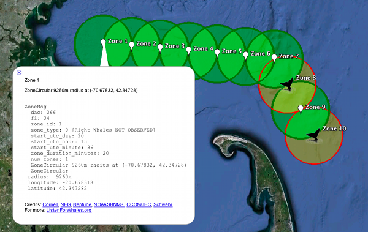
To get the KML to the iPad, I have to publish the feed in my Google Maps accounts. However, Google Maps looses all of the nice coloring and the icons.
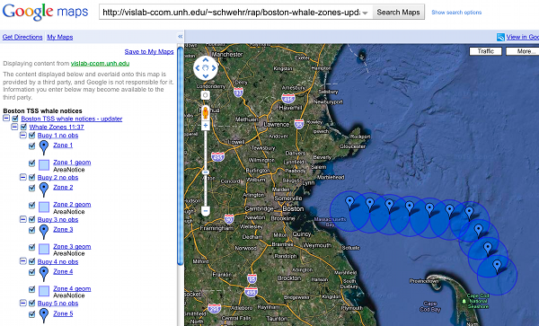
UPDATE 2 hours later: Mano Marks has been helping me to debug what is going on. Google Maps now looks much better. I hope to follow up in the ipad tomorrow.
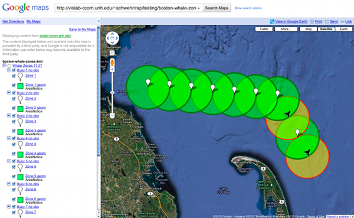
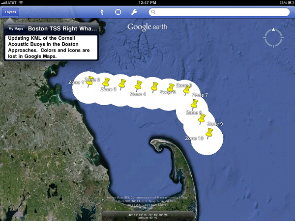
I also had my USCGC Healy visualizations in my Google Maps. This was how I gave permission for Google to pull my GeoRSS feeds into the Google Oceans layer. The science data turned out pretty good. The HTML table of data came out looking better than it does on the desktop.
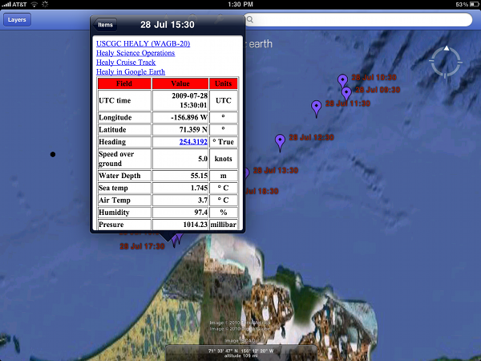
The aloftcon KML feed of pictures looking out over the bow of the ship shows the icon just fine unlike the whale zones. However, then I click on a placemark the photo never loads.
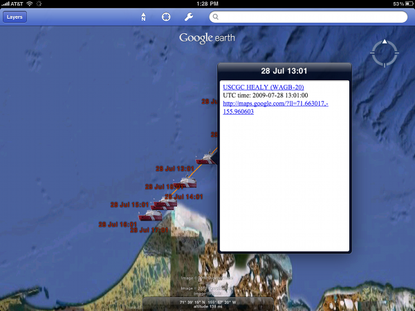
As BRC pointed out, the iPad has only been out for a couple of months, so developers haven't had much time to really dig into what is possible on the iPad. I can't wait to see where the new breed of iOS and Android tablets go.
07.18.2010 09:38
iPhone dev kickstart
I think I might win the worst hacked
together code award for this, but here is a screen shot at my first
attempt at an iPhone app. This is basically just the SeismicXML demo that I've
butchered.
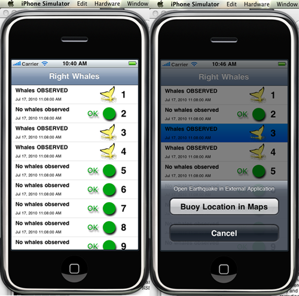
07.16.2010 10:27
Google Enterprise for Emergency Response
The Google LatLong blog:
Preparing for emergencies with Google Earth Enterprise -
Louisiana Earth.
Bummer is that this is a Windows only application.
07.15.2010 10:12
Joint Analysis Group Report 1 - Brooks McCall
Another report from a science vessel
in the Gulf of Mexico...
From NOAA Science Missions & Data - BP Deepwater Horizon Oil Spill
Joint Analysis Group Report 1 - peer-reviewed, inter-agency report about Brooks McCall subsurface monitoring near the Deepwater Horizon wellhead, May 8-25.
From NOAA Science Missions & Data - BP Deepwater Horizon Oil Spill
Joint Analysis Group Report 1 - peer-reviewed, inter-agency report about Brooks McCall subsurface monitoring near the Deepwater Horizon wellhead, May 8-25.
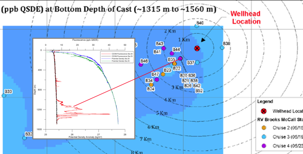
07.14.2010 15:48
Best lectures about the Deepwater Horizon Oil Spill
I started working towards a lessons
learned for the Spill of National Significance drill in March this
year:
SONS 2010 wrap up. However, with the DWH, I have not had time
to really see where we are at. But, lots of people have been
willing to attack the task. GCaptain has picked their top ones:
20 Best Lectures to Learn About the Oil Spill. Thanks! Now if I
just had time to watch some of these.
I have two delicious tags that are relevant, but have yet to turn them into a coherent whole. deepwaterhorizon and sons.
I have two delicious tags that are relevant, but have yet to turn them into a coherent whole. deepwaterhorizon and sons.
07.14.2010 09:03
internet network tracking viewed through NMEA message traffic
I did some system maintenance
yesterday on a computer that is receiving AIS via the internet.
CCOM and another group are both watching this critical feed and, as
expected, it tripped the alarms for both groups. This was the first
test of the monitoring for this machine since it was all put in
place a couple weeks ago. Seeing this happen gives me at least a
little bit of warm fuzzy. I can't see what the other monitoring
solution looks like, but here is what I got when things settled
back down:
I wanted more detail, so I setup a small python program to log the NMEA messages per second coming across the internet connection. It's a bit hard to see what is going on in this 12 hour view, but it gives you a sense that the network connection is reasonably stable. Perhaps I should set this up as an audio file.
Here is zoomed in to one of the zones on the right side of the above graph. You can see that the biggest upward spike follows a short period of no data. This should be the network connection trying to catch up for a block of missed packets and is likely from network congestion somewhere on the link.
***** Nagios ***** Notification Type: FLAPPINGSTART Service: AIS_FEED Host: aisserver.unh.edu Address: xxx.xxx.xxx.xxx State: OK Date/Time: Tue Jul 13 14:16:05 EDT 2010 Additional Info: SNMP OK - 2926 new records in last 10 minutesNagios is feeding nagios grapher at a pretty low update rate, but you can see a sharp drop right above the 13th July tag.
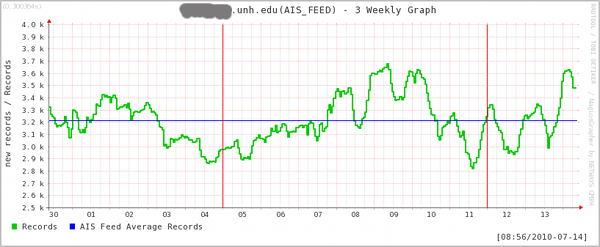
I wanted more detail, so I setup a small python program to log the NMEA messages per second coming across the internet connection. It's a bit hard to see what is going on in this 12 hour view, but it gives you a sense that the network connection is reasonably stable. Perhaps I should set this up as an audio file.
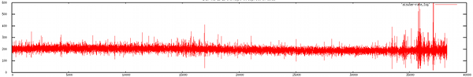
Here is zoomed in to one of the zones on the right side of the above graph. You can see that the biggest upward spike follows a short period of no data. This should be the network connection trying to catch up for a block of missed packets and is likely from network congestion somewhere on the link.
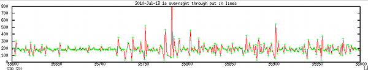
07.12.2010 17:28
Congressional report on Deepwater Horizon
This just hit OpenCRS: R41262:
Deepwater Horizon Oil Spill: Selected Issues for Congress
On April 20, 2010, an explosion and fire occurred on the Deepwater Horizon drilling rig in the Gulf of Mexico. This resulted in 11 worker fatalities, a massive oil release, and a national response effort in the Gulf of Mexico region by the federal and state governments as well as BP. Based on estimates from the Flow Rate Technical Group, which is led by the U.S. Geological Survey, the 2010 Gulf spill has become the largest oil spill in U.S. waters, eclipsing the 1989 Exxon Valdez spill several times over. The oil spill has damaged natural resources and has had regional economic impacts. In addition, questions have been raised as to whether the regulations and regulators of offshore oil exploration have kept pace with the increasingly complex technologies needed to explore and develop deeper waters. Crude oil has been washing into marshes and estuaries and onto beaches in Louisiana, Mississippi, and Alabama. Oil has killed wildlife, and efforts are underway to save oil-coated birds. The most immediate economic impact of the oil spill has been on the Gulf fishing industry: commercial and recreational fishing have faced extensive prohibitions within the federal waters of the Gulf exclusive economic zone. The fishing industry, including seafood processing and related wholesale and retail businesses, supports over 200,000 jobs with related economic activity of $5.5 billion. Other immediate economic impacts include a decline in tourism. On the other hand, jobs related to cleanup activities could mitigate some of the losses in the fishing and tourism industry. The Minerals Management Service (MMS) and the U.S. Coast Guard are the primary regulators of drilling activity. The Environmental Protection Agency (EPA) has multiple responsibilities, with a representative serving as the vice-chair of the National Response Team and Regional Response Teams. The Federal Emergency Management Administration (FEMA) has responsibilities with respect to the economic impacts of the spill; its role so far has been primarily that of an observer, but that may change once the scope of impacts can be better understood. MMS is also the lead regulatory authority for offshore oil and gas leasing, including collection of royalty payments. MMS regulations generally require that a company with leasing obligations demonstrate that proposed oil and gas activity conforms to federal laws and regulations, is safe, prevents waste, does not unreasonably interfere with other uses of the OCS, and does not cause impermissible harm or damage to the human, marine, or coastal environments. On May 13, 2010, the Department of the Interior announced that Secretary Ken Salazar had initiated the process of reorganizing the MMS administratively to separate the financial and regulatory missions of the agency. The Coast Guard generally overseas the safety of systems at the platform level of a mobile offshore drilling unit. Several issues for Congress have emerged as a result of the Deepwater Horizon incident. What lessons should be drawn from the incident? What technological and regulatory changes may be needed to meet risks peculiar to drilling in deeper water? How should Congress distribute costs associated with a catastrophic oil spill? What interventions may be necessary to ensure recovery of Gulf resources and amenities? What does the Deepwater Horizon incident imply for national energy policy, and the trade-offs between energy needs, risks of deepwater drilling, and protection of natural resources and amenities? This report provides an overview of selected issues related to the Deepwater Horizon incident and is not intended to be comprehensive. It will be updated to reflect emerging issues.
07.12.2010 07:54
ScienceBlogs exodus
One of the geology blogs that I
follow has left ScienceBlogs after the whole Pepsi thing. Congrats
to Highly
Allochthonous to having their own home. Chris and Anne post
some really great geo-stuff!
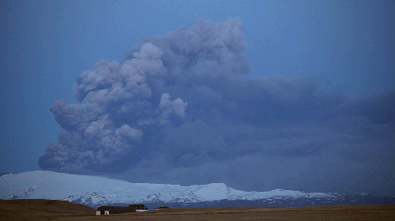
07.12.2010 07:23
Internet updates for ECDIS
The fact that this is news really
bothers me. What year is it?
Aug 2010 Digital Ship:
The same issue has an article by the ever present Andy Norris:
Aug 2010 Digital Ship:
AdvetoâÄôs new internet-connected ECDIS-4000 has been certified by the US Coast Guard (USCG) for use onboard SOLAS vessels and high speed craft, having been already certified by Det Norske Veritas (DNV) earlier this year. ...The fact that vendors are still insisting on building ECDIS on MS Windows it rediculous. It is possible to provide robust security and uptime with platforms like OpenBSD. The mariner should not be using the operating system behind the ECSDIS anyway, so what does it matter to the user? The other thing I haven't seen are good ways to ensure that the navigational team knows what updates have been applied to the charts and nautical pubs. For the windows users out there, try to imagine a system that has been up for 2 years without reboot on the bare internet without a firewall or antivirus software. That is what you are missing out on.
The same issue has an article by the ever present Andy Norris:
... However, many units currently fitted on ships today are not capable of properly displaying Class B data because the mes- sage definition for these systems was not agreed until after the date for mandatory fitting of AIS Class A. ... It is worth noting that all radars installed after this date [July 2008] properly display Class B targets, even if the radar is con- nected to an older MKD that cannot dis- play Class B data correctly. ...
07.11.2010 10:57
More on handling XML namespaces
First, I thought that XML required an
xml tag to start off any XML file. I've getting getting GeoRSS and
KML files that do not have that first line. xmllint doesn't
complain, but I don't think that means much.
But, the main thing I wanted to write about is XML namespaces. If you didn't know ahead of time how someone is handling the namespaces ahead of time, what are really supposed to do? What is if their prefix what "grss" instead of "georss" before the equals? This is the first line of the georss that I am working on parsing:
But, the main thing I wanted to write about is XML namespaces. If you didn't know ahead of time how someone is handling the namespaces ahead of time, what are really supposed to do? What is if their prefix what "grss" instead of "georss" before the equals? This is the first line of the georss that I am working on parsing:
<rss xmlns:georss="http://www.georss.org/georss" xmlns:gml="http://www.opengis.net/gml" version="2.0">I want to at least build the lxml namespace variable that I am passing in. I need to have a dictionary that looks like this:
{'georss': 'http://www.georss.org/georss', 'gml': 'http://www.opengis.net/gml'}
I came up with this hideous mess to convert the first line of xml
to a namespace dict. It's ugly and brittle:
namespaces = dict ([ [ (val.strip('"') if val[0]=='"' else val.strip("'\"").split(':')[-1]) for val in entry.split('=')] for entry
Yuck! There really has to be a better way to do this.07.08.2010 22:18
Trimble and their web mapping + mobile app Deepwater Horizon
Looks like more and more people are
getting into creating services and websites for the Deepwater
Horizon incident (DWH). Trimble now has mobile apps for the public
to send in reports using iPhones, Blackberries, and Android phones.
Not sure where this info will be used, but it's great to see people
creating stuff.
http://www.mapthespill.org/
Found via Hydro International
http://www.mapthespill.org/
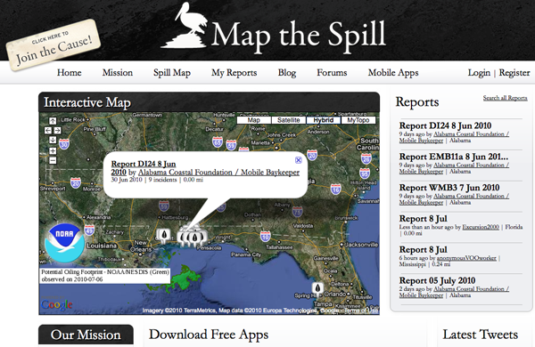
Found via Hydro International
07.08.2010 08:45
An upcoming SAIS conference
Last night, I ran into a
reference to this upcoming conference on satellite AIS:
CANEUS-Shared
Small Satellites CSSP (Collective Security, Safety, and Prosperity)
International Workshop) - Oct 20-22 in Italy. Note, that the
website is having some database backend issues while I write this.
This is not entirely a SAIS workshop, but that seems to be the
primary emphasis.
It's nice to see people looking at global SAIS rather than LRIT. LRIT will happen because, as the USCG so clearly put it, "The US signed the treaty", but it just doesn't make that much sense. SAIS is the way to go if you want to see global vessel traffic.
It's nice to see people looking at global SAIS rather than LRIT. LRIT will happen because, as the USCG so clearly put it, "The US signed the treaty", but it just doesn't make that much sense. SAIS is the way to go if you want to see global vessel traffic.
1 It complements the existing programs, increases their range and adds
new functionality to them as:
A. Spaced based AIS (Automatic Identification System) for ships with:
* Higher level of persistent coverage
* Coverage in currently un-monitored areas
* Approximate real time information gathering
* Lowest cost to the end users
B. An universal platform for data extraction for:
* Global, continuous situational awareness in open sea and shallow
waters in support of security and safety
* Monitoring the environment and pollution in âÄúunwiredâÄù places
such as polar regions and open oceans
* Monitoring countries' exclusive economic zones
* Monitoring fishing activities and violations
* Monitoring borders, deserts and âÄúunwiredâÄù areas in support of
governance in remote areas
2 It brings a new level of international partnerships:
* Open and affordable for all nations, increases geographical
coverage, and provides countries having no space capabilities
with the benefits of satellite technology
* High flexibility of contributions: Partners ,including
governments, commercial businesses and academia, can participate
with monetary or in-kind investments (building own satellites,
contributing launch services or ground station operations, or
other contributions to the constellation)
* Participating nations become part of a new global information
network offering solutions to a wide array of needs in support
of global safety, security, environmental protection and
economic growth
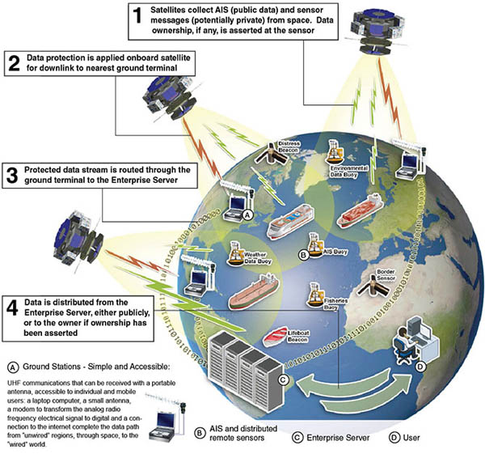
07.07.2010 19:06
New Deepwater Horizon web page
Just found out there is a new
Deepwater Horizon (DWH) web page:
http://www.restorethegulf.gov/
http://www.restorethegulf.gov/
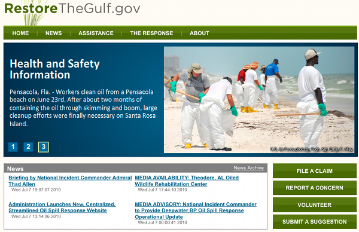
07.07.2010 17:15
CMake continued - trying to make a setup for libais
My next step in working with CMake is
to try to use it for a smaller project for a while. GNU autotools
made my head hurt. CMake seems to make much more sense to me (at
least so far). I'm using libais as my test case. It had a hand done
makefile that was pretty brittle, but got me going in a way that I
like. Here is the initial CMakeLists.txt that I have created. I
know it needs work to be ready for prime time, but it does seem to
compile both static and shared libraries and a test application.
01: # -*- shell-script -*- make up a mode for emacs
02: cmake_minimum_required (VERSION 2.8)
03: project (libais)
04:
05: set (LIBAIS_VERSION_MAJOR 0)
06: set (LIBAIS_VERSION_MINOR 6)
07:
08: configure_file (
09: "${PROJECT_SOURCE_DIR}/ais.h.in"
10: "${PROJECT_BINARY_DIR}/ais.h"
11: )
12:
13: include_directories("${PROJECT_BINARY_DIR}")
14:
15: add_library(ais SHARED STATIC ais ais1_2_3 ais4_11 ais5 ais7_13 ais8 ais9 ais10 ais12 ais14 ais15 ais18 ais19 ais21 ais24)
16:
17: add_executable(test_libais test_libais)
18: target_link_libraries (test_libais ais)
19:
20: # There must be a new line after each command?
21:
Right now, I have everything in the same directory. I will likely
want to make sudbirs down the road. It's very interesting that you
can either give the file extension or not give it when specifying
source files. I am happy to report that (most of the time), the
above creates a test program and it runs. However, I often have
CMake screw up the dependencies such that it doesn't try to link in
test_libais.cpp. The failure looks like this:
make VERBOSE=1
Linking CXX executable test_libais
/sw32/bin/cmake -E cmake_link_script CMakeFiles/test_libais.dir/link.txt --verbose=1
/usr/bin/c++ -Wl,-search_paths_first -headerpad_max_install_names -o test_libais libais.a
Undefined symbols:
"_main", referenced from:
start in crt1.10.6.o
ld: symbol(s) not found
collect2: ld returned 1 exit status
make[2]: *** [test_libais] Error 1
make[1]: *** [CMakeFiles/test_libais.dir/all] Error 2
make: *** [all] Error 2
Any modification to the CMakeLists.txt file and things get redone
correctly. This strange behavior led me to take a look at
dependency graphicing. This is pretty neat, but I can't figure out
how to have the source files show up in the dependency graph.
fink install graphviz cmake --graphviz=libais.dot . dot -Tpng libais.dot > libais.pngThe dot file is pretty simple:
digraph GG {
node [
fontsize = "12"
];
"node0" [ label="ais" shape="diamond"];
"node1" [ label="test_libais" shape="house"];
"node1" -> "node0"
}
The resulting graph is not very interesting for such a small
project: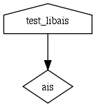
07.07.2010 16:11
The pain of naming places
Matt discovered first hand from our
work with the NOAA Coast Pilot that
People Suck at Naming Places


07.07.2010 15:16
Emacs understands MS Word documents???
Another unintentional find in
emacs...
This makes me wonder is pptx is the same... and it is. This is great news for the ideas that Steve L and I were contemplating during the Phx mission for IPRW. We had thoughts about suffering through some Microsoft OS machine running a service to make PPTs, but that was no fun. We were also thinking about creating Keynote directory tree, but that was Mac specific. It shouldn't be too hard to write out a working pptx that MS Office 2007+, OpenOffice, or Keynote can read.
M Filemode Length Date Time File
- ---------- -------- ----------- -------- ----------------------------
-rw-rw-rw- 1364 1-Jan-1980 00:00:00 [Content_Types].xml
-rw-rw-rw- 735 1-Jan-1980 00:00:00 _rels/.rels
-rw-rw-rw- 817 1-Jan-1980 00:00:00 word/_rels/document.xml.rels
-rw-rw-rw- 55091 1-Jan-1980 00:00:00 word/document.xml
-rw-rw-rw- 7559 1-Jan-1980 00:00:00 word/theme/theme1.xml
-rw-rw-rw- 83908 1-Jan-1980 00:00:00 docProps/thumbnail.jpeg
-rw-rw-rw- 2222 1-Jan-1980 00:00:00 word/settings.xml
-rw-rw-rw- 1521 1-Jan-1980 00:00:00 word/fontTable.xml
-rw-rw-rw- 276 1-Jan-1980 00:00:00 word/webSettings.xml
-rw-rw-rw- 769 1-Jan-1980 00:00:00 docProps/core.xml
-rw-rw-rw- 14675 1-Jan-1980 00:00:00 word/styles.xml
-rw-rw-rw- 726 1-Jan-1980 00:00:00 docProps/app.xml
- ---------- -------- ----------- -------- ----------------------------
169663 12 files
Then I ran file on it and it turns out that this is yet another zip
based format:
file *.docx Agenda.docx: Zip archive data, at least v2.0 to extractSo it really is not that exciting, but now I know I can pull an image of the first page of a word document if I am on a machine without Word.
This makes me wonder is pptx is the same... and it is. This is great news for the ideas that Steve L and I were contemplating during the Phx mission for IPRW. We had thoughts about suffering through some Microsoft OS machine running a service to make PPTs, but that was no fun. We were also thinking about creating Keynote directory tree, but that was Mac specific. It shouldn't be too hard to write out a working pptx that MS Office 2007+, OpenOffice, or Keynote can read.
M Filemode Length Date Time File
- ---------- -------- ----------- -------- ---------------------------------------------
-rw-rw-rw- 3309 1-Jan-1980 00:00:00 [Content_Types].xml
-rw-rw-rw- 738 1-Jan-1980 00:00:00 _rels/.rels
-rw-rw-rw- 446 1-Jan-1980 00:00:00 ppt/slides/_rels/slide1.xml.rels
-rw-rw-rw- 1138 1-Jan-1980 00:00:00 ppt/_rels/presentation.xml.rels
-rw-rw-rw- 3416 1-Jan-1980 00:00:00 ppt/presentation.xml
-rw-rw-rw- 1720 1-Jan-1980 00:00:00 ppt/slides/slide1.xml
-rw-rw-rw- 311 1-Jan-1980 00:00:00 ppt/slideLayouts/_rels/slideLayout7.xml.rels
-rw-rw-rw- 311 1-Jan-1980 00:00:00 ppt/slideLayouts/_rels/slideLayout11.xml.rels
-rw-rw-rw- 311 1-Jan-1980 00:00:00 ppt/slideLayouts/_rels/slideLayout5.xml.rels
-rw-rw-rw- 311 1-Jan-1980 00:00:00 ppt/slideLayouts/_rels/slideLayout8.xml.rels
-rw-rw-rw- 311 1-Jan-1980 00:00:00 ppt/slideLayouts/_rels/slideLayout10.xml.rels
-rw-rw-rw- 311 1-Jan-1980 00:00:00 ppt/slideLayouts/_rels/slideLayout9.xml.rels
-rw-rw-rw- 1991 1-Jan-1980 00:00:00 ppt/slideMasters/_rels/slideMaster1.xml.rels
-rw-rw-rw- 311 1-Jan-1980 00:00:00 ppt/slideLayouts/_rels/slideLayout1.xml.rels
-rw-rw-rw- 311 1-Jan-1980 00:00:00 ppt/slideLayouts/_rels/slideLayout2.xml.rels
-rw-rw-rw- 311 1-Jan-1980 00:00:00 ppt/slideLayouts/_rels/slideLayout3.xml.rels
-rw-rw-rw- 3240 1-Jan-1980 00:00:00 ppt/slideLayouts/slideLayout11.xml
-rw-rw-rw- 3016 1-Jan-1980 00:00:00 ppt/slideLayouts/slideLayout10.xml
-rw-rw-rw- 4652 1-Jan-1980 00:00:00 ppt/slideLayouts/slideLayout9.xml
-rw-rw-rw- 2961 1-Jan-1980 00:00:00 ppt/slideLayouts/slideLayout2.xml
-rw-rw-rw- 4352 1-Jan-1980 00:00:00 ppt/slideLayouts/slideLayout1.xml
-rw-rw-rw- 11981 1-Jan-1980 00:00:00 ppt/slideMasters/slideMaster1.xml
-rw-rw-rw- 311 1-Jan-1980 00:00:00 ppt/slideLayouts/_rels/slideLayout6.xml.rels
-rw-rw-rw- 4436 1-Jan-1980 00:00:00 ppt/slideLayouts/slideLayout3.xml
-rw-rw-rw- 4707 1-Jan-1980 00:00:00 ppt/slideLayouts/slideLayout4.xml
-rw-rw-rw- 7218 1-Jan-1980 00:00:00 ppt/slideLayouts/slideLayout5.xml
-rw-rw-rw- 2228 1-Jan-1980 00:00:00 ppt/slideLayouts/slideLayout6.xml
-rw-rw-rw- 1890 1-Jan-1980 00:00:00 ppt/slideLayouts/slideLayout7.xml
-rw-rw-rw- 4797 1-Jan-1980 00:00:00 ppt/slideLayouts/slideLayout8.xml
-rw-rw-rw- 311 1-Jan-1980 00:00:00 ppt/slideLayouts/_rels/slideLayout4.xml.rels
-rw-rw-rw- 51893 1-Jan-1980 00:00:00 ppt/media/image1.png # and here is my image! Too bad the original name is lost
-rw-rw-rw- 7571 1-Jan-1980 00:00:00 ppt/theme/theme1.xml
-rw-rw-rw- 14107 1-Jan-1980 00:00:00 docProps/thumbnail.jpeg
-rw-rw-rw- 1039 1-Jan-1980 00:00:00 ppt/viewProps.xml
-rw-rw-rw- 182 1-Jan-1980 00:00:00 ppt/tableStyles.xml
-rw-rw-rw- 450 1-Jan-1980 00:00:00 ppt/presProps.xml
-rw-rw-rw- 1133 1-Jan-1980 00:00:00 docProps/app.xml
-rw-rw-rw- 677 1-Jan-1980 00:00:00 docProps/core.xml
-rw-rw-rw- 9419 1-Jan-1980 00:00:00 ppt/printerSettings/printerSettings1.bin
- ---------- -------- ----------- -------- ---------------------------------------------
158128 39 files
And perhaps we could even write out a much more compact pptx
without all the unused layouts. Digging in to
ppt/slides/slide1.xml, it does not look too bad!
...
<p:sp>
<p:nvSpPr>
<p:cNvPr id="2" name="Title 1"/>
<p:cNvSpPr>
<a:spLocks noGrp="1"/>
</p:cNvSpPr>
<p:nvPr>
<p:ph type="ctrTitle"/>
</p:nvPr>
</p:nvSpPr>
<p:spPr/>
<p:txBody>
<a:bodyPr/>
<a:lstStyle/>
<a:p>
<a:r>
<a:rPr lang="en-US" smtClean="0"/>
<a:t>Hello world</a:t>
</a:r>
<a:endParaRPr lang="en-US"/>
</a:p>
</p:txBody>
</p:sp>
...
07.07.2010 10:16
Introduction video for ERMA
NOAA has produced a video
introduction to ERMA/GeoPlatform. My prior videos did not have any
voice over. It's great to have someone else do this. It's too bad
they didn't point out the AIS features inside of ERMA. There
definitely needs to be a video talking about how to use the vessel
tracking capabilities with an understanding of the issues.
07.06.2010 16:27
Trying to follow a CMake tutorial
I can already say that getting
started with CMake is easier than with AutoConf, but it definitely
has rough edges. It's always tough to compare with learning GNU
Make. I got slowly introduced to makefiles in my 2nd year of
undergrad CS courses. It was a lot easier to pick up that way when
I was in a cluster full of 100 workstations where most everyone
else was also learning how to create Makefiles. And I had the time
to sit down and read the entire GNU Make book.
I started on CMake with what I thought was the best tutorial. Definetely not the way to go. Here is my working through the initial example and what I had to do differently. I'm working on this using Mac OSX 10.6, Aquaemacs 23, and cmake 2.8.2 from fink.
The problems started right off the mark. This isn't to say that I don't think that CMake is a great idea. It's just a bit rough on a beginner (but a million times easier than with the GNU autotools). Step one has you create a CMakeLists file. That's not right. It should be CMakeLists.txt. Based on the tutorial, I created a CMakeLists:
I started on CMake with what I thought was the best tutorial. Definetely not the way to go. Here is my working through the initial example and what I had to do differently. I'm working on this using Mac OSX 10.6, Aquaemacs 23, and cmake 2.8.2 from fink.
The problems started right off the mark. This isn't to say that I don't think that CMake is a great idea. It's just a bit rough on a beginner (but a million times easier than with the GNU autotools). Step one has you create a CMakeLists file. That's not right. It should be CMakeLists.txt. Based on the tutorial, I created a CMakeLists:
cmake_minimum_required (2.6) project (Tutorial) add_executable(Tutorial tutorial.cxx)And I always like to get something working as fast as possible. There is no mention of the command line to use. Turns out that I need to run this:
cmake -G "Unix Makefiles" .
CMake Error: The source directory "/Users/schwehr/Desktop/cmake-tut" does not appear to contain CMakeLists.txt.
mv CMakeLists{,.txt} # renames CMakeLists to CMakeLists.txt if you are not used to the {before,after} syntax in bash
cmake -G "Unix Makefiles" .
CMake Error at CMakeLists.txt:1 (cmake_minimum_required):
cmake_minimum_required called with unknown argument "2.6".
-- The C compiler identification is GNU
-- The CXX compiler identification is GNU
-- Checking whether C compiler has -isysroot
-- Checking whether C compiler has -isysroot - yes
-- Checking whether C compiler supports OSX deployment target flag
-- Checking whether C compiler supports OSX deployment target flag - yes
-- Check for working C compiler: /usr/bin/gcc
-- Check for working C compiler: /usr/bin/gcc -- works
-- Detecting C compiler ABI info
-- Detecting C compiler ABI info - done
-- Checking whether CXX compiler has -isysroot
-- Checking whether CXX compiler has -isysroot - yes
-- Checking whether CXX compiler supports OSX deployment target flag
-- Checking whether CXX compiler supports OSX deployment target flag - yes
-- Check for working CXX compiler: /usr/bin/c++
-- Check for working CXX compiler: /usr/bin/c++ -- works
-- Detecting CXX compiler ABI info
-- Detecting CXX compiler ABI info - done
-- Configuring incomplete, errors occurred!
Say what? So something is wrong with the first line of the file is
wrong. A little Googling and I have this:
cmake_minimum_required (VERSION 2.8) project (Tutorial) add_executable(Tutorial tutorial.cxx)It now runs like this:
cmake -G "Unix Makefiles" . -- Configuring done CMake Error in CMakeLists.txt: Cannot find source file "tutorial.cxx". Tried extensions .c .C .c++ .cc .cpp .cxx .m .M .mm .h .hh .h++ .hm .hpp .hxx .in .txx -- Build files have been written to: /Users/schwehr/Desktop/cmake-tutThat's better - it is just missing the tutorial.cxx Now I can go on to the C++ code that they have for an example, but I found two problems right away. It's not good to use poor coding examples and the headers are not right. I have submitted a bug report to the CMake Mantis tracker.
// A simple program that computes the square root of a number
#include <stdio.h>
#include <math.h>
int main (int argc, char *argv[])
{
if (argc < 2)
{
fprintf(stdout,"Usage: %s number\n",argv[0]);
return 1;
}
double inputValue = atof(argv[1]);
double outputValue = sqrt(inputValue);
fprintf(stdout,"The square root of %g is %g\n",
inputValue, outputValue);
return 0;
}
Now that I have a C++ file, I can run cmake successfully and
attempt to build the program. But it still is not working:
make [100%] Building CXX object CMakeFiles/Tutorial.dir/tutorial.cxx.o /Users/schwehr/Desktop/cmake-tut/tutorial.cxx: In function int main(int, char**): /Users/schwehr/Desktop/cmake-tut/tutorial.cxx:11: error: atof was not declared in this scope make[2]: *** [CMakeFiles/Tutorial.dir/tutorial.cxx.o] Error 1 make[1]: *** [CMakeFiles/Tutorial.dir/all] Error 2 make: *** [all] Error 2I get the same error on a Ubuntu 10.04 box. Adding cstdlib fixes this (and I converted the other 2 from C style includes to C++ style):
#include <cstdlib> // Added this header for atof #include <cstdio> #include <cmath>Then building it and running it works!
make [100%] Building CXX object CMakeFiles/Tutorial.dir/tutorial.cxx.o Linking CXX executable Tutorial [100%] Built target Tutorial ./Tutorial 1.2 The square root of 1.2 is 1.09545
07.06.2010 13:58
Why has a vessel in AIS not been updated recently?
I am getting this question a lot
lately now that part of NAIS is exposed on the ERMA/GeoPlatform
public website:
Example View with AIS. Here is what it can look like with last
reports spanning 4 days:
Here are basic reasons that I can think of for why a vessel has not showing up as recently
There are a large number of things that could cause a vessel to not be transmitting. The simplest two are that the vessel has left the covered area or the AIS unit is not powered. Other posibilites include that that AIS is broken, using an incorrect MMSI/name, or is a blue force vessel in silent or secure mode. Cabling and antenna failures are another common cause of trouble. Also, a non-functioning GPS will mean that the ship is transmitting position reports, but my software will discard them because that contain no actual positioning information.
The second class of trouble comes from VHF signals and how AIS uses the spectrum. The problems can start right away at the transmit side. Ships superstructure can often block the transmissions in certain directions (aspect oriented issues). AIS works based on local cells and the receiver might be hearing multiple cells at the same time - this is known as message collision. As distance increases, it is harder to receive VHF signals. There are other factors that make it harder to hear (low signal-to-noise [SNR]): antennas that are close to the water or far away get less power to the receiver. There might also be noise in the VHF spectrum. The classic noise issue that NAIS receive stations had to watch out for was NOAA weather radio broadcasts. Putting a receiver right next to a weather radio transmitter is not going to work well as they are broadcasting at 162.400 to 162.550 MHz and there are 1000 transmitters.
The previous 2 can be sometimes very challenging to figure out.
The 3 group encompasses the problems that happen at the receiver. It is easy to detect a failure in areas that always have lots of ships. This can be trouble in remote corners where there are not always a ship to be seen, so a quiet receiver might be okay. In New England, the most common problem is power outages that last longer than the battery backups, but in that cause it also leads to the final group. With mobile receivers (planes, ships, buoys, platforms, and spacecraft) that feed back to the ground, the platform might not be in the area or it may be storing up the data for a while until it gets to a place to send data back into the network.
The final group (4) are all the things that happen as the data gets from the receiver to the end display. The most common problem in this group comes from power outages and line issues. If the receiver is on a DSL connection far from a major city, storms can take down the receiver. The data has to successfully get back to the USCG in West Virginia and then get transmitted up to UNH. UNH has to have power and internet functioning, the computers have to be working, and the database has to be storing the positions. From there, the WMS Mapserver feed has to work and then the NOAA operations center in Silver Spring serves up the GeoPlatform.gov site.
I'm sure I left a lot out, but hopefully that gives you a sense of how things work. If you need realtime AIS for mission critical operations, you should have your own receiver (or transceiver) on your ship, plane, or shore station and be looking at a local plotting application, radar, and looking out the windows!!!
AIS is a powerful technology, but it has to be used with care and understanding of the limitations.
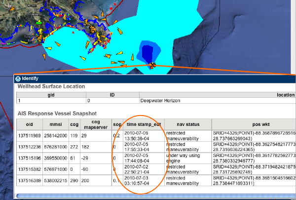
Here are basic reasons that I can think of for why a vessel has not showing up as recently
- The vessel is not broadcasting position reports
- The messages are not coming through correctly across the VHF link
- The messages are not being received
- Communications from the receiver to the display are not fuctioning.
There are a large number of things that could cause a vessel to not be transmitting. The simplest two are that the vessel has left the covered area or the AIS unit is not powered. Other posibilites include that that AIS is broken, using an incorrect MMSI/name, or is a blue force vessel in silent or secure mode. Cabling and antenna failures are another common cause of trouble. Also, a non-functioning GPS will mean that the ship is transmitting position reports, but my software will discard them because that contain no actual positioning information.
The second class of trouble comes from VHF signals and how AIS uses the spectrum. The problems can start right away at the transmit side. Ships superstructure can often block the transmissions in certain directions (aspect oriented issues). AIS works based on local cells and the receiver might be hearing multiple cells at the same time - this is known as message collision. As distance increases, it is harder to receive VHF signals. There are other factors that make it harder to hear (low signal-to-noise [SNR]): antennas that are close to the water or far away get less power to the receiver. There might also be noise in the VHF spectrum. The classic noise issue that NAIS receive stations had to watch out for was NOAA weather radio broadcasts. Putting a receiver right next to a weather radio transmitter is not going to work well as they are broadcasting at 162.400 to 162.550 MHz and there are 1000 transmitters.
The previous 2 can be sometimes very challenging to figure out.
The 3 group encompasses the problems that happen at the receiver. It is easy to detect a failure in areas that always have lots of ships. This can be trouble in remote corners where there are not always a ship to be seen, so a quiet receiver might be okay. In New England, the most common problem is power outages that last longer than the battery backups, but in that cause it also leads to the final group. With mobile receivers (planes, ships, buoys, platforms, and spacecraft) that feed back to the ground, the platform might not be in the area or it may be storing up the data for a while until it gets to a place to send data back into the network.
The final group (4) are all the things that happen as the data gets from the receiver to the end display. The most common problem in this group comes from power outages and line issues. If the receiver is on a DSL connection far from a major city, storms can take down the receiver. The data has to successfully get back to the USCG in West Virginia and then get transmitted up to UNH. UNH has to have power and internet functioning, the computers have to be working, and the database has to be storing the positions. From there, the WMS Mapserver feed has to work and then the NOAA operations center in Silver Spring serves up the GeoPlatform.gov site.
I'm sure I left a lot out, but hopefully that gives you a sense of how things work. If you need realtime AIS for mission critical operations, you should have your own receiver (or transceiver) on your ship, plane, or shore station and be looking at a local plotting application, radar, and looking out the windows!!!
AIS is a powerful technology, but it has to be used with care and understanding of the limitations.
07.05.2010 15:37
Fog bow seen by the USCGC Healy
I watch the images coming though the
GeoRSS feed that I setup for the USCGC Healy in my news reader and
just saw this which I haven't see before. It's not a Sun Dog and I thought it
might be a Brocken spectre,
but Monica pointed out that it is most likely a Fog Bow. Nice!
Original: 20100705-1701.jpeg [LDEO]
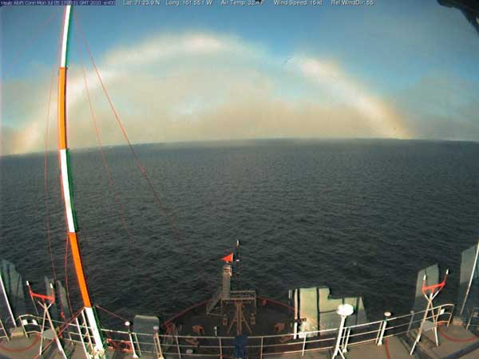
Original: 20100705-1701.jpeg [LDEO]

07.05.2010 13:25
Thoughts on GeoRSS feeds
If you want to comment, please do so
here:
More thoughts on sensor data in GeoRSS
UPDATE 2010-Jul-06: KML's ExtendedData is basically what I was looking for with KML and Sean Gillies pointed me to his example of Microsoft's Open Data Protocol (OData). Sean points out that Google Maps does not understand OData. GeoRSS needs to pull in something like one of these.
We have started working with GeoRSS fields and my frustration with GeoRSS continues. I posted back in March asking for thoughts on GeoRSS: Sensor data in GeoRSS?. I got some helpful thoughts from Sean Gillies, but have not heard from any others.
Here is an example of my USCGC Healy feed of science data that is only in HTML table form within the description:
Healy Science feed in Google Maps
It's got some really nice features that include:
This is how the AIS feed looks in Google Maps... mostly enough to see what is going on. If you know the name of a vessel, you can find it on the left side list of ships. That's a great start, but it is hard to take that info into a database. If the fields change at all in the title or description, all parsers that use that feed MUST be rewritten.
This buoy field shows the opposite idea of putting all the information into fields. It's also missing pubDate and such, but we should focus on the SeaSurfaceTemp and SampleDate. These are more machine readble. The XML and an image:
For referece, here is what one of those blue tails looks like in the GeoRSS:
Looking at the KML, you can see that we have all the same problems with data being delivered by GeoRSS.
It's too bad that in Google Earth, you can't put a GeoRSS in a Network Link.
In case you are curious, wikipedia has an entry on SLDMBs: Self-Locating Datum Marker Buoy
Trackbacks:
links for 2010-07-07 [Ogle Earth]
Friday Geonews: MapQuest Funding OpenStreetMap, Intergraph Acquired, More ArcGIS on iPad, and more [Slashgeo]
UPDATE 2010-Jul-06: KML's ExtendedData is basically what I was looking for with KML and Sean Gillies pointed me to his example of Microsoft's Open Data Protocol (OData). Sean points out that Google Maps does not understand OData. GeoRSS needs to pull in something like one of these.
We have started working with GeoRSS fields and my frustration with GeoRSS continues. I posted back in March asking for thoughts on GeoRSS: Sensor data in GeoRSS?. I got some helpful thoughts from Sean Gillies, but have not heard from any others.
Here is an example of my USCGC Healy feed of science data that is only in HTML table form within the description:
Healy Science feed in Google Maps
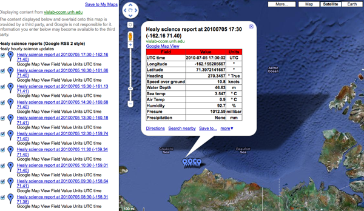
It's got some really nice features that include:
- Being pretty simple (when compared to SensorML and SOS)
- You can just throw a URL in Google Maps and see the data
- It works inside normal RSS readers (e.g. my USCGC Healy Feeds)
- It's a simple file that you can copy from machine to machine or email.
- It should be easy to parse
- Points and lines work great
- Validation is a pain, but appears to be getting better
- What should you put in the title and description?
- It seams you have to create separate item tags for points and lines for things like ships
- There is no standard for machine readable content other than the location
<item>
<title>HOS IRON HORSE - 235072115: 0KTS @ 17 Jun 2010 16:07:10 GMT</title>
<description>Time: 17 Jun 2010 16:07:10 GMT Speed: 0</description>
<pubDate>17 Jun 2010 16:07:10 GMT</pubDate>
<georss:where>
<gml:Point>
<gml:pos>28.0287 -89.1005</gml:pos>
</gml:Point>
</georss:where>
</item>
This makes for easy human reading of data and works with GoogleMaps
and OpenLayers.This is how the AIS feed looks in Google Maps... mostly enough to see what is going on. If you know the name of a vessel, you can find it on the left side list of ships. That's a great start, but it is hard to take that info into a database. If the fields change at all in the title or description, all parsers that use that feed MUST be rewritten.
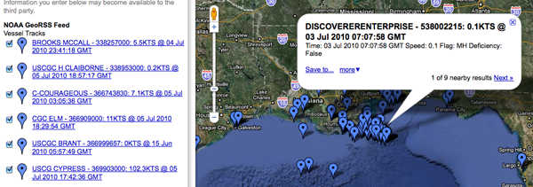
This buoy field shows the opposite idea of putting all the information into fields. It's also missing pubDate and such, but we should focus on the SeaSurfaceTemp and SampleDate. These are more machine readble. The XML and an image:
<item>
<title>SLDMB 43166</title>
<description>Most recent posrep from 43166</description>
<SeaSurfaceTemp>30C</SeaSurfaceTemp>
<SampleDate>2010-06-25 11:00:00.0Z</SampleDate>
<georss:where>
<gml:Point>
<gml:pos>27.241828, -84.663689</gml:pos>
</gml:Point>
</georss:where>
</item>
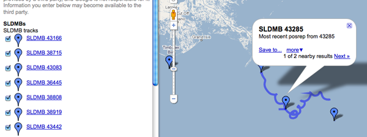
There are some problems in the sample above. First, the description doesn't contain a human readable version. This causes the GoogleMaps display to give us nothing more than the current position of this "buoy" (and a recent track history that comes as a separate entry). Ouch. That's hard to preview. Second, the machine readable portion is fine, but I can't write anything that can discover additional data fields if they are added. If someone adds <foo>1234</foo>, is that field a part of something else or is it more sensor data that I should be tracking? A namespace for sensor data would help. Then I could pick off all of the fields that are in the "SimpleSensorData" namespace. But, I have to say that namespaces are good, but a pain. I would prefer a data block, where everything in there is a data field. It would also be good to separate units from the values. Here is how it might look:
<rss xmlns:georss="http://www.georss.org/georss" xmlns:gml="http://www.opengis.net/gml" version="2.0">
<channel>
<title>NOAA GeoRSS Feed</title>
<description>Vessel Tracks</description>
<item>
<title>HOS IRON HORSE - 235072115: 0KTS @ 17 Jun 2010 16:07:10 GMT</title>
<description>Time: 17 Jun 2010 16:07:10 GMT Speed: 17KTS
<a href="http://photos.marinetraffic.com/ais/shipdetails.aspx?MMSI=235072115">MarineTraffic entry for 235072115</a> <!-- or some other site to show vessel details -->
</description>
<updated>2010-06-17T16:07:10Z</updated>
<link href="http://gomex.erma.noaa.gov/erma.html#x=-89.1005&y=28.00287&z=11&layers=3930+497+3392"/>
<!-- Proposed new section -->
<data>
<mmsi>235072115</mmsi>
<name>HOS IRON HORSE</name>
<!-- Enermated lookup data types -->
<type_and_cargo value="244">INVALID</type_and_cargo>
<nav_status value="3">Restricted Maneuverability</nav_status>
<!-- Values with units -->
<cog units="deg true">287</cog>
<sog units="knots">0</sog>
<!-- Add more data fields here -->
</data>
<!-- The meat of GeoRSS -->
<georss:where>
<gml:Point>
<gml:pos>28.0287 -89.1005</gml:pos>
</gml:Point>
</georss:where>
</item>
<!-- more items -->
</channel>
</rss>
Perhaps it would be better inside of data to have each data item
have a <DataItem> tag and inside have a name attribute.
<data_value name="sog" long_name="Speed Over Ground" units="knots">12.1</data_value>Or we could just embed json within a data tag... but that would be mixing apples and oranges. If we start doing json, the entire response should be GeoJSON.
For referece, here is what one of those blue tails looks like in the GeoRSS:
<item>
<title>SLDMB 43166 Track</title>
<georss:where>
<gml:LineString>
<gml:posList>
27.241828 -84.663689
27.243782 -84.664666
27.245442 -84.66574
27.246978 -84.666779
27.248248 -84.668049
27.250104 -84.669318
27.251699 -84.670985
27.253158 -84.673045
27.254232 -84.6749
27.255209 -84.676561
27.256076 -84.678023
</gml:posList>
</gml:LineString>
</georss:where>
</item>
There was also an assertion that KML would be better. However, I
would argue against KML as a primary data transport mechanism. KML
is a presentation description, not a data encoding format. It's
much like when I ask someone for an image and they take a perfectly
good JPG, TIF, or PNG and put it in a PowerPoint... sending me only
a PowerPoint. That can be useful, especially if there are
annotations they want on a final, but I must have the original
image or a lot is lost.Looking at the KML, you can see that we have all the same problems with data being delivered by GeoRSS.
<Placemark>
<name>38681</name>
<description>Sample Date: 2010-07-02 18:00:00.0 Lat: 30.247965 Lon: -87.690424 SST: 35.8C</description>
<styleUrl>#msn_circle</styleUrl>
<Point>
<coordinates>-87.690424,30.247965,0</coordinates>
</Point>
</Placemark>
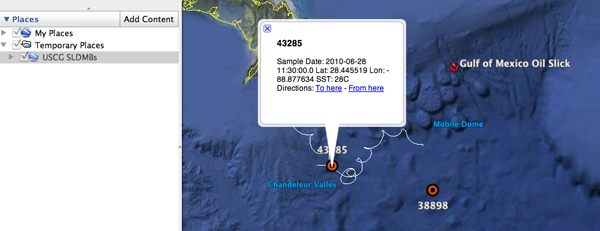
It's too bad that in Google Earth, you can't put a GeoRSS in a Network Link.
In case you are curious, wikipedia has an entry on SLDMBs: Self-Locating Datum Marker Buoy
Trackbacks:
links for 2010-07-07 [Ogle Earth]
Friday Geonews: MapQuest Funding OpenStreetMap, Intergraph Acquired, More ArcGIS on iPad, and more [Slashgeo]
07.02.2010 17:25
CCOM Telepresense Console in action
Right now, we have two cruises that
are going through the CCOM telepresense cruise. Turns out that the
audio was left on for the Okeanus Explorer, so they were listening
in to discussions for the Nautilus. What a really cool accident! To
have one ship in the Pacific and the other in the Aegean (?)
hearing each other while talking to multiple shore side stations.
Now all they need are some IRC chat sessions.
You can watch yourself, here!
http://nautiluslive.org/
The local education team at work on the console:
An example of the video:
The Okeanos Explorer cruise that was listening in: Indonesia and U.S. Launch Deep-Sea Expedition
You can watch yourself, here!
http://nautiluslive.org/
The local education team at work on the console:
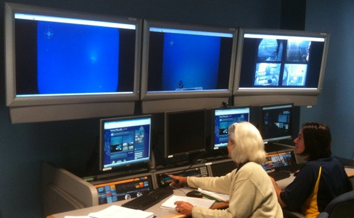
An example of the video:
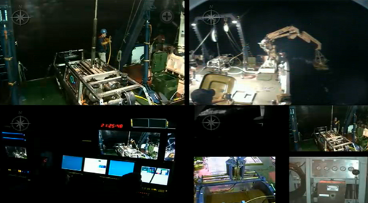
The Okeanos Explorer cruise that was listening in: Indonesia and U.S. Launch Deep-Sea Expedition
07.01.2010 16:15
Atomic Bombing - How to Protect Yourself
Gotta love this image!
This is part of the title page for: atomicbombing00scierich.pdf found via Vigilant Citizens: Then vs. Now [Bruce Schneier]
This is part of the title page for: atomicbombing00scierich.pdf found via Vigilant Citizens: Then vs. Now [Bruce Schneier]
07.01.2010 11:10
New IMO circulars on AIS Binary Messages
It's been a long road, but I am very
excited to see that the work on AIS binary messages for right whale
notices (zones) and a new water level report has made it to
published IMO Circulars. You will see a few figures in the document
that first appeared here on my blog
The two new circulars:
The new zone messages (Circ 289, Section 11, page 28) are termed "Area notice"and are quite a bit more flexible. The AppId for the message is a DAC or 001 and an FI of 22. Greg and I spent a lot of time trying to technically handle all of the additional feature requests. The whale notices for the Boston area will still use the 0 and 1 values of the zones that I've had all along, but the terms are now more general to not just include whales.
I have reference software and sample messages available for the zone message as it was last summer. These might be slightly out of date.
ais-areanotice-py
Thanks go to Lee for making sure that the two key examples that we have from the Boston right whale notices made it into the standard document.
The next message that I want to mention is the new Environmental message that can do a lot more than the original met/hydro message and is super flexible (perhaps to a fault). I haven't really figured out how I am going to represent this message in terms of a C++ data structure and SQL table(s).
Here is my original water level message. We presented this working with Pydro in the Spring of 2007 for the Elizabeth River, VA using actual realtime NOAA COOPS water level data.
The new message (DAC 001, FI 26) doesn't have all the quality control flags and values that I would like, but it is definitely an improvement over the Circ 236 water level. The new message has a water level report payload (type 3). The new message contains water level type (which I wish were blended into the vertical datums field), a 10 cm resolution water depth, trend (increasing/decreasing), vertical datum (e.g. MLLW, NAVD-88, WGS-84, etc), sensor type (odd name - represents raw realtime, realtime with QC, predicted, forecast, nowcast),
These are definitely not perfect, but this is moving in the right direction. There are some seriously strange conventions that have crept into the standard. For example, if there is no water level data, why would we want to send a water level payload inside an Environmental message and set the type of data to "0 no data" and possibly waste a slot?
Also, these documents do not talk about the new AIS binary message types that have communications state and play better with the VDL (VHF data link channels) to avoid reserved slots to prevent packet collision.
The two new circulars:
- Circ 289 - Guidance on the Use of AIS Application-Specific Messages
- Circ 290 - Guidance for the Presentation and Display of AIS Application-Specific Messages Information
| Name | NumberOfBits | ArrayLength | Type | Units | Description |
|---|---|---|---|---|---|
| MessageID | 6 | uint | AIS message number. Must be 8 | ||
| RepeatIndicator | 2 | uint | Indicated how many times a message has been repeated 0: default 3: do not repeat any more |
||
| UserID | 30 | uint | Unique ship identification number (MMSI) | ||
| Spare | 2 | uint | Reserved for definition by a regional authority. | ||
| dac | 10 | uint | Designated Area Code - 366 for the United States | ||
| fid | 6 | uint | Functional IDentifier - 63 for the Whale Notice | ||
| day | 5 | uint | Time of most recent whale detection. UTC day of the month 1..31 | ||
| hour | 5 | uint | Time of most recent whale detection. UTC hours 0..23 | ||
| min | 6 | uint | Time of most recent whale detection. UTC minutes | ||
| stationid | 8 | uint | Identifier of the station that recorded the whale. Usually a number. | ||
| longitude | 28 | decimal | degrees | Center of the detection zone. East West location | |
| latitude | 27 | decimal | degrees | Center of the detection zone. North South location | |
| timetoexpire | 16 | uint | minutes | Minutes from the detection time until the notice expires | |
| radius | 16 | uint | m | Distance from center of detection zone (lat/lon above) |
The new zone messages (Circ 289, Section 11, page 28) are termed "Area notice"and are quite a bit more flexible. The AppId for the message is a DAC or 001 and an FI of 22. Greg and I spent a lot of time trying to technically handle all of the additional feature requests. The whale notices for the Boston area will still use the 0 and 1 values of the zones that I've had all along, but the terms are now more general to not just include whales.
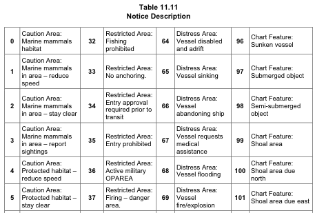
I have reference software and sample messages available for the zone message as it was last summer. These might be slightly out of date.
ais-areanotice-py
Thanks go to Lee for making sure that the two key examples that we have from the Boston right whale notices made it into the standard document.
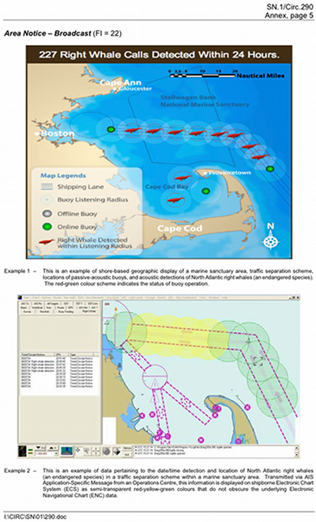
The next message that I want to mention is the new Environmental message that can do a lot more than the original met/hydro message and is super flexible (perhaps to a fault). I haven't really figured out how I am going to represent this message in terms of a C++ data structure and SQL table(s).
Here is my original water level message. We presented this working with Pydro in the Spring of 2007 for the Elizabeth River, VA using actual realtime NOAA COOPS water level data.
| Name | NumberOfBits | ArrayLength | Type | Units | Description |
|---|---|---|---|---|---|
| MessageID | 6 | uint | AIS message number. Must be 8 | ||
| RepeatIndicator | 2 | uint | Indicated how many times a message has been repeated 0: default 3: do not repeat any more |
||
| UserID | 30 | uint | Unique ship identification number (MMSI) | ||
| Spare | 2 | uint | Reserved for definition by a regional authority. | ||
| dac | 10 | uint | Designated Area Code | ||
| fid | 6 | uint | Functional Identifier | ||
| efid | 12 | uint | extended functional identifier | ||
| month | 4 | uint | Time the measurement represents month 1..12 | ||
| day | 5 | uint | Time the measurement represents day of the month 1..31 | ||
| hour | 5 | uint | Time the measurement represents UTC hours 0..23 | ||
| min | 6 | uint | Time the measurement represents minutes | ||
| sec | 6 | uint | Time the measurement represents seconds | ||
| stationid | 6 | 7 | aisstr6 | Character identifier of the station. Usually a number. | |
| longitude | 28 | decimal | degrees | Location of the sensor taking the water level measurement or position of prediction. East West location | |
| latitude | 27 | decimal | degrees | Location of the sensor taking the water level measurement or position of prediction. North South location | |
| waterlevel | 16 | int | cm | Water level in centimeters | |
| datum | 5 | uint | What reference datum applies to the value 0: MLLW 1: IGLD-85 2: WaterDepth 3: STND 4: MHW 5: MSL 6: NGVD 7: NAVD 8: WGS-84 9: LAT |
||
| sigma | 32 | float | m | Standard deviation of 1 second samples used to compute the water level height | |
| o | 8 | uint | Count of number of samples that fall outside a 3-sigma band about the mean | ||
| levelinferred | 1 | bool | indicates that the water level value has been inferred | ||
| flat_tolerance_exceeded | 1 | bool | flat tolerance limit was exceeded. Need better descr | ||
| rate_tolerance_exceeded | 1 | bool | rate of change tolerance limit was exceeded | ||
| temp_tolerance_exceeded | 1 | bool | temperature difference tolerance limit was exceeded | ||
| expected_height_exceeded | 1 | bool | either the maximum or minimum expected water level height limit was exceeded | ||
| link_down | 1 | bool | Unable to communicate with the tide system. All data invalid | ||
| timeLastMeasured | 12 | udecimal | hours | Time relative since the timetag that the station actually measured a value. |
The new message (DAC 001, FI 26) doesn't have all the quality control flags and values that I would like, but it is definitely an improvement over the Circ 236 water level. The new message has a water level report payload (type 3). The new message contains water level type (which I wish were blended into the vertical datums field), a 10 cm resolution water depth, trend (increasing/decreasing), vertical datum (e.g. MLLW, NAVD-88, WGS-84, etc), sensor type (odd name - represents raw realtime, realtime with QC, predicted, forecast, nowcast),
These are definitely not perfect, but this is moving in the right direction. There are some seriously strange conventions that have crept into the standard. For example, if there is no water level data, why would we want to send a water level payload inside an Environmental message and set the type of data to "0 no data" and possibly waste a slot?
Also, these documents do not talk about the new AIS binary message types that have communications state and play better with the VDL (VHF data link channels) to avoid reserved slots to prevent packet collision.